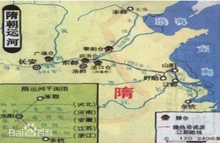

-
史前时期
中原这两个字出现很早。殷墟甲骨文中有“中”字,西周金文中有“原”字。据古字形分析,“原”就是泉源丰沛、适合生存的地方;“中”字,本义为徽帜。甲骨刻辞多有“立中”之辞,立中就是建旗。
由此可知,中即是位居中央、八方来汇的地方,是聚众谋议、定夺大事的地方。

二里头遗址出土陶器上刻划符
中原古帝之有巢氏
-
汉朝时期
公元前202年2月，刘邦即帝位后定都洛阳三个月，为开国之都，在洛阳南宫举行了开国大典，“汉初三杰”即由此而来。在此设豫州刺史部以及梁国（都睢阳），梁国为全国最强大的诸侯国 [19] 。玄汉先后定都南阳、洛阳。
东汉王朝定都洛阳，以宛（南阳）为南都，东汉末迁都许昌。
东汉之后形成三国鼎立局面，曹操在官渡大败袁绍，挟天子以令诸侯，曹操崛起于魏郡的邺城（今河南安阳）遂称“魏公”，以许昌为都，曹丕称帝后定都洛阳。
汉朝地图
-
隋朝时期
以洛阳为东都。隋炀帝时迁都洛阳，又以洛阳为中心开凿了沟通南北的大运河。中原地区再次成为了全国的政治经济文化中心，迈向了另一个文化高峰。
隋朝大运河
-
唐朝时期
唐朝设立河南道，以洛阳为东都，唐高宗显庆二年移都洛阳及唐玄宗长期在洛执政。唐太宗李世民下令修葺洛阳都城，号称洛阳宫，李世民在位时期曾三次来洛阳处理政务，在洛阳宫居住两年之久。唐高宗于显庆二年（657年）颁布《建东都诏》称洛阳“中兹宇宙，通赋贡於四方，交乎风雨，均朝宗於万国。”于是建都洛阳，实行两京制，自此多居东都洛阳受朝。随着唐帝国实力的不断上升，洛阳逐渐成为世界中心。史载“洛阳繁华富庶，远甚长安。”开元年间，唐玄宗励精图治，开创“开元盛世”，使唐朝国力达到鼎盛。此间玄宗亦多居洛京接见万国来使，并形成“三年一上计，万国趋河洛”的盛世局面。武周建都洛阳，改洛阳为神都。
长安城一角
-
宋朝时期
赵匡胤在陈桥驿黄袍加身后建立北宋，以开封为东京、以洛阳为西京、以商丘为南京、以大名为北京。从唐朝建立到北宋覆亡，中原地区的经济和文化达到鼎盛时期。1127年，靖康之变时宋徽宗第九子康王赵构定都南京应天府（今河南商丘）继承大宋皇位，改元建炎，建立南宋，庙号宋高宗。宋史称高宗即位为建炎中兴。
清明上河图中繁华开封